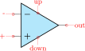
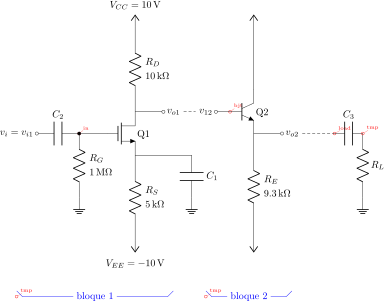
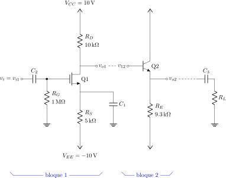

CircuiTikZ
version 1.8.6-unreleased (2026/02/10)
2 Tutorials
Before even starting with CircuiTikZ you should be sure to have understood the basics of TikZ. It is hightly recommended that you read and go through at least the following parts of the TikZ manual:
-
• “Tutorial: A Picture for Karl’s Students” (around page 30);
-
• “Specifying Coordinates” (around page 131)
-
• “Nodes and their shapes” (around page 220)
…but obviously a good knowledge of TikZ will help you a lot. Remember, a circuit drawn with CircuiTikZ is nothing more than a tikzpicture with an (albeit powerful and extended) set of shapes and commodity macros.
Said that, to draw a circuit, you have to load the CircuiTikZ package; this can be done with
\usepackage[siunitx, RPvoltages]{circuitikz}
somewhere in your document preamble. It will load automatically the needed packages if not already done before.
2.1 Getting started with CircuiTikZ: a current shunt
Let’s say we want to prepare a circuit to teach how a current shunt works; the idea is to draw a current generator, a couple of resistors in parallel, and the indication of currents and voltages for the discussion.
A circuit in CircuiTikZ is drawn into a circuitikz environment (which is really an alias for tikzpicture). In this first example we will use absolute coordinates. The electrical components can be divided in two main categories: the ones that are bipoles and are placed along a path (also known as to-style component, for their usage), and components that are nodes and can have any number of poles or connections.
Let’s start with the first type of component, and build a basic mesh:
The symbol for the current source might surprise some; this is actually the european-style symbol, and the type of symbol chosen reflects the default options of the package (see section 1.12). Let’s change the style for now (the author of the tutorial, Romano, is European — but he has always used American-style circuits, so…); and while we’re at it, let’s add the other branch and some labels.
\begin{circuitikz}[american]
\draw (0,0) to[isource, l=$I_0$] (0,3) -- (2,3)
to[R=$R_1$] (2,0) -- (0,0);
\draw (2,3) -- (4,3) to[R=$R_2$]
(4,0) -- (2,0);
\end{circuitikz}
You can use a single path or multiple paths when drawing your circuit, it’s just a question of style (but be aware that closing paths perfectly could be non-trivial, see section 6.4), and you can use standard TikZ lines (--, |- or similar) for the wires. Nonetheless, sometime using the CircuiTikZ specific short component for the wires can be useful, because then we can add labels and poles to them, as for example in the following circuit, where we add a current (with the key i=..., see section 5.3) and a connection dot (with the special shortcut -* which adds a circ node at the end of the connection, see sections 4.12 and 6.1).
\begin{circuitikz}[american]
\draw (0,0) to[isource, l=$I_0$] (0,3)
to[short, -*, i=$I_0$] (2,3)
to[R=$R_1$, i=$i_1$] (2,0) -- (0,0);
\draw (2,3) -- (4,3)
to[R=$R_2$, i=$i_2$]
(4,0) to[short, -*] (2,0);
\end{circuitikz}
One of the problems with this circuit is that we would like to have the current labels in a different position, such as for example on the upper side of the resistors, so that Kirchhoff’s Current Law at the node is better shown to students. No problem; as you can see in section 5.2 you can use the position specifiers <>^_ after the key i:
\begin{circuitikz}[american]
\draw (0,0) to[isource, l=$I_0$] (0,3)
to[short, -*, i=$I_0$] (2,3)
to[R=$R_1$, i>_=$i_1$] (2,0) -- (0,0);
\draw (2,3) -- (4,3)
to[R=$R_2$, i>_=$i_2$]
(4,0) to[short, -*] (2,0);
\end{circuitikz}
Finally, we would like to add voltages indication for carrying out the current formulas; as the default position of the voltage signs seems a bit cramped to me, I am adding the voltage shift parameter to make a bit more space for it…
\begin{circuitikz}[american, voltage shift=0.5]
\draw (0,0)
to[isource, l=$I_0$, v=$V_0$] (0,3)
to[short, -*, i=$I_0$] (2,3)
to[R=$R_1$, i>_=$i_1$] (2,0) -- (0,0);
\draw (2,3) -- (4,3)
to[R=$R_2$, i>_=$i_2$]
(4,0) to[short, -*] (2,0);
\end{circuitikz}
Et voila!. Remember that this is still LaTeX, which means that you have done a description of your circuit, which is, in a lot of way, independent of the visualization of it. If you ever have to adapt the circuit to, say, a journal that forces European style and flows instead of currents, you just change a couple of things and you have what seems a completely different diagram:
\begin{circuitikz}[european, voltage shift=0.5]
\draw (0,0)
to[isourceC, l=$I_0$, v=$V_0$] (0,3)
to[short, -*, f=$I_0$] (2,3)
to[R=$R_1$, f>_=$i_1$] (2,0) -- (0,0);
\draw (2,3) -- (4,3)
to[R=$R_2$, f>_=$i_2$]
(4,0) to[short, -*] (2,0);
\end{circuitikz}
And finally, this is still TikZ, so that you can freely mix other graphics element to the circuit.
\begin{circuitikz}[american, voltage shift=0.5]
\draw (0,0)
to[isource, l=$I_0$, v=$V_0$] (0,3)
to[short, -*, f=$I_0$] (2,3)
to[R=$R_1$, f>_=$i_1$] (2,0) -- (0,0);
\draw (2,3) -- (4,3)
to[R=$R_2$, f>_=$i_2$]
(4,0) to[short, -*] (2,0);
\draw[red, thick] (0.6,2.1) rectangle (4.2,3.8)
node[pos=0.5, above]{KCL};
\end{circuitikz}
2.2 A non-inverting op-amp amplifier
Let’s now try to draw a non-inverting amplifier based on op-amps; the canonical implementation can be, for example, this one from “electronics tutorials”. Obviously, the style and form of drawing a circuit is often a matter of personal tastes and, maybe even more important, of the details you are focusing on; drawing a non-inverting amplifier will be different if you are drawing it to explain how it works or if you are simply using it in a more complex circuit, assuming its operation well known by the reader. Anyway, the final objective is to have a circuit like the one on the right, drawn so that it is easy to reuse.

We have to start the drawing from a generic point. Given that the idea is to have a reusable block, instead of positioning the op-amp and build around it, we will start from the input “pole”:
\begin{circuitikz}[]
\draw (0,0) node[above]{$v_i$} to[short, o-]
++(1,0)
node[op amp, noinv input up, anchor=+](OA){\texttt{
OA1}}
;
\end{circuitikz}

In this snippet, notice that the only absolute coordinate is the first one; that will enable us to “copy and paste” the circuit in several places, or create a macro for it. We position a text node above it, and then draw a wire with a pole to a relative (1,0) coordinate: in other words, we move 1 unit to the right drawing a short-circuit, which is the same as a wire. The usage of to[short...] simplifies the position of the pole, but notice that we could have also written:
\draw (0,0) node[above]{$v_i$} node[ocirc]{} -- ++(1,0) ...
with the same result.
The second step is to position the op-amp. We can check the manual and see the component’s description (section 4.20):
Operational amplifier, type: node, fillable (node[op amp]{}). Class: amplifiers.
where we notice the type of the component (it is a node-type component, so we have to use node to position it) and the available “anchors”: points we can use to position the shape or to connect to. Not all the anchors are explicitly printed in the description box; you should read further in the manual and you’ll see a “component anchors” (4.20.1) section with the relevant information.
Anyway, the op-amp must be connected with the + anchor to our input wire, so we say anchor=+ in the option lists; this shifts the whole element so that the named anchor will lie at the current position of the path. Moreover, normally the shape has the inverting input on the bottom side, and we want it the other way around, so we use also noinv input up in the keys defining the node. We could also have flipped the shape with yscale=-1, but in this case we would need to consider the effects on anchors and on the text; see section 3.2.1.
Now we can draw the resistors; let’s start with \(R_1\). We will draw it going down vertically from the - anchor — we have named the node OA so that will be OA.-. We will need to connect the \(R_2\) also, so we do the following:
-
• draw a wire going down, and mark a point where we want the feedback resistor to connect;
-
• then draw \(R_1\) and finally
-
• draw the ground node.
\begin{circuitikz}[scale=0.8, transform shape]
\draw (0,0) node[above]{$v_i$} to[short, o-]
++(1,0)
node[op amp, noinv input up, anchor=+](OA){\texttt{
OA1}}
(OA.-) -- ++(0,-1) coordinate(FB)
to[R=$R_1$] ++(0,-2) node[ground]{}
;
\end{circuitikz}
We are only missing the feedback resistor now. We will use orthogonal coordinates, writing:
\draw (FB) to[R=$R_2$] (FB -| OA.out) -- (OA.out)
The meaning is the following:
-
• move the current point to the coordinate named FB;
-
• put a resistor, with label \(R_2\), from here to…
-
• the coordinates, which are at the intersection of a horizontal line through FB and a vertical line through OA.out: the -| coordinate operation is quite mnemonic;
-
• then continue drawing to OA.out.
You can use a separate \draw command or just continue the path you were writing; the choice is just personal preference, but be warned that it can affect the drawing of poles (see section 6.1 about this if you notice strange things).
Finally, we add the output and a couple of nodes:
\begin{circuitikz}[scale=0.8, transform shape]
\draw (0,0) node[above]{$v_i$} to[short, o-]
++(1,0)
node[op amp, noinv input up, anchor=+](OA){\texttt{
OA1}}
(OA.-) -- ++(0,-1) coordinate(FB)
to[R=$R_1$] ++(0,-2) node[ground]{}
(FB) to[R=$R_2$, *-] (FB -| OA.out) -- (OA.out)
to [short, *-o] ++(1,0) node[above]{$v_o$}
;
\end{circuitikz}
The last step to obtain the final look is to add a bit of styling. We want the op-amp filled with a light cyan color, and we prefer to have the label aligned with the left side of the device:
\ctikzset{amplifiers/fill=cyan!20, component text=left}
\begin{circuitikz}[scale=0.8, transform shape]
\draw (0,0) node[above]{$v_i$} to[short, o-]
++(1,0)
node[op amp, noinv input up, anchor=+](OA){\texttt{
OA1}}
(OA.-) -- ++(0,-1) coordinate(FB)
to[R=$R_1$] ++(0,-2) node[ground]{}
(FB) to[R=$R_2$, *-] (FB -| OA.out) -- (OA.out)
to [short, *-o] ++(1,0) node[above]{$v_o$}
;
\end{circuitikz}
The \ctikzset command choosing the style is better placed in the preamble, though. Style should be coherent for all the document body, so avoiding stating it for every circuit is normally the best strategy.
2.2.1 Reusing the circuit: the easy way
The easiest way to reuse the circuit is to put it in a macro. This is a very flexible way of doing it; the only drawback is that the only easy way to position it is using the first coordinate: you will not be able to move the component using “anchors”; that is more complex and will need the use of subcircuits (but you will lose parameters…see section 3.4).
Defining a macro for our amplifier could be as easy as this:
\ctikzset{amplifiers/fill=cyan!20, component text=left}
\newcommand\myNIA[4]{%1: name of this amplifier, %2 start coordinate, %3 R1, %4 R2
\draw #2 coordinate(#1-in) to[short] ++(1,0)
node[op amp, noinv input up, anchor=+](#1-OA){\texttt{#1}}
(#1-OA.-) -- ++(0,-1) coordinate(#1-FB)
to[R=#3] ++(0,-2) node[ground]{}
(#1-FB) to[R=#4, *-] (#1-FB -| #1-OA.out) -- (#1-OA.out)
to [short, *-] ++(1,0) coordinate(#1-out)
;
}
We remove the open poles (it’s better to draw them at the end to avoid artifacts) and then we make the names of the coordinates and of the nodes unique, by prepending a parameter that we will provide at every invocation. Then we remove the labels (for simplicity here) and add a couple of coordinates that we will be able to use from the outside when building our circuit.
And we can use it like in the following:
\begin{circuitikz}[scale=0.7, transform shape]
\myNIA{OA1}{(0,0)}{$R_1$}{$R_2$}
% start drawing from the output of OA1
\myNIA{OA2}{(OA1-out)}{$R_3$}{$R_4$}
\node [ocirc] at (OA1-in) {};
\node [above] at (OA1-in) {$v_i$};
\node [ocirc] at (OA2-out){};
\node [above] at (OA2-out) {$v_o$};
\draw (OA1-out) -| (OA2-in);
\end{circuitikz}
2.3 A transistor-based amplifier
The idea is to draw a two-stage amplifier for a lesson, or exercise, on the different qualities of BJT and MOSFET transistors.
Please notice that this section uses the “new” position for transistor labels, enabled since version 0.9.7. You should refer to older manuals to see how to do the same with older versions; basically the transistor’s names were output using an additional node{} command.
Also notice that this is a more “personal” tutorial, showing a way to draw circuits that is, in the author’s opinion, highly reusable and easy to do. The idea is to use relative coordinates and named nodes as much as possible, so that changes in the circuit are easily done by changing just a few numbers that select relative positions and by using symmetries. Crucially, this kind of approach makes each block reusable in other diagrams by just changing one coordinate.
First of all, let’s define a handy function to show the position of nodes:
\def\normalcoord(#1){coordinate(#1)}
\def\showcoord(#1){coordinate(#1) node[circle, red, draw, inner sep=1pt,
pin={[red, overlay, inner sep=0.5pt, font=\tiny, pin distance=0.1cm,
pin edge={red, overlay}]45:#1}](){}}
\let\coord=\showcoord
The idea is that you can use \coord() instead of coordinate() in paths, and that will draw small red markers showing them. For example:
\begin{circuitikz}[american]
\draw (0,0) node[npn](Q){};
\path (Q.center) \coord(center)
(Q.B) \coord(B) (Q.C) \coord(C)
(Q.E) \coord(E);
\useasboundingbox
(Q.south west) (Q.north east) +(.75,.3);
\end{circuitikz}
After the circuit is drawn, simply commenting out the second \let command will hide all the markers.
So let’s start with the first stage transistor; given that my preferred way of drawing a MOSFET is with arrows, I’ll start with the command \ctikzset{tripoles/mos style/arrows}:
\begin{circuitikz}[american]
\ctikzset{tripoles/mos style/arrows}
\def\killdepth#1{{\raisebox{0pt}[\height][0pt]{#1}}}
\path (0,0) -- (.5,0); % bounding box
\draw (0,0) node[nmos](Q1){\killdepth{Q1}};
\end{circuitikz}
I had to do draw an invisible line to take into account the text for Q1 — the text is not taken into account in calculating the bounding box. This is because the “geographical” anchors (north, north west, …) are defined for the symbol only. In a complex circuit, this is rarely a problem.
Another thing I like to modify with respect to the standard is the position of the arrows in transistors, which are normally in the middle of the symbol. Using the following setting (see section 4.15.5) will move the arrows to the start or end of the corresponding pin.
\ctikzset{transistors/arrow pos=end}
The tricky thing about \killdepth{} macro is the finicky details. Without the \killdepth macro, the labels of different transistors will be adjusted so that the vertical center of the box is at the center anchor, and as an effect, labels with descenders (like Q) will have a different baseline than labels without. You can see this here (it’s really subtle):
\begin{circuitikz}[american,]
\draw (0,0) node[nmos](Q1){q1} ++(2,0)
node[nmos](M1){m1};
\draw [red] (Q1.center) ++(0,-0.7ex) -- ++(3,0);
\draw (0,-2)node[nmos](Q1){\killdepth{q1}} ++(2,0)
node[nmos](M1){\killdepth{m1}};
\draw [red] (Q1.center) ++(0,-0.7ex) -- ++(3,0);
\end{circuitikz}
We will start connecting the first transistor with the power supply with a couple of resistors. Notice that I am naming the nodes GND, VCC and VEE, so that I can use the coordinates to have all the supply rails at the same vertical position (more on this later).
\begin{circuitikz}[american,]
\draw (0,0) node[nmos,](Q1){\killdepth{Q1}};
\draw (Q1.S) to[R, l2^=$R_S$ and \SI{5}{k\ohm}]
++(0,-3) node[vee](VEE){$V_{EE}=\SI{-10}{V}$};
\draw (Q1.D) to[R, l2_=$R_D$ and \SI{10}{k\ohm}]
++(0,3) node[vcc](VCC){$V_{CC}=\SI{10}{V}$};
\draw (Q1.S) to[short] ++(2,0) to[C=$C_1$]
++(0,-1.5) node[ground](GND){};
% show the named coordinates!
\path (GND) \coord(GND)
(VCC) \coord(VCC)
(VEE) \coord(VEE);
\end{circuitikz}
After that, let’s add the input part. I will use a named node here, referring to it to add the input source. Notice how the ground node is positioned: the coordinate (in |- GND) is the point with the horizontal coordinate of (in) and the vertical one of (GND), lining it up with the ground of the capacitor \(C_1\) (you can think it as “the point aligned vertically with in and horizontally with GND”).
\begin{circuitikz}[american, scale=0.7, transform shape]
\draw (0,0) node[nmos,](Q1){\killdepth{Q1}};
\draw (Q1.S) to[R, l2^=$R_S$ and \SI{5}{k\ohm}]
++(0,-3) node[vee](VEE){$V_{EE}=\SI{-10}{V}$};
\draw (Q1.D) to[R, l2_=$R_D$ and \SI{10}{k\ohm}]
++(0,3) node[vcc](VCC){$V_{CC}=\SI{10}{V}$};
\draw (Q1.S) to[short] ++(2,0) to[C=$C_1$]
++(0,-1.5) node[ground](GND){};
\draw (Q1.G) to[short] ++(-1,0)
\coord (in) to[R, l2^=$R_G$ and \SI{1}{M\ohm}]
(in |- GND) node[ground]{};
\draw (in) to[C, l_=$C_2$,*-o]
++(-1.5,0) node[left](vi1){$v_i=v_{i1}$};
\end{circuitikz}
Notice that the only absolute coordinate here is the first one, (0,0); so the elements are connected with relative movements and can be moved by just changing one number (for example, changing the to[C=$C_1$] ++(0,-1.5) will move all the grounds down).
This is the final circuit, with the nodes still marked:
% this is for the blue brackets under the circuit
\tikzset{blockdef/.style={%
{Straight Barb[harpoon, reversed, right, length=0.2cm]}-{Straight Barb[harpoon, reversed, left, length=0.2cm]},
blue,
}}
\def\killdepth#1{{\raisebox{0pt}[\height][0pt]{#1}}}
\def\coord(#1){coordinate(#1)}
\def\coord(#1){coordinate(#1) node[circle, red, draw, inner sep=1pt,
pin={[red, overlay, inner sep=0.5pt, font=\tiny, pin distance=0.1cm,
% we reset the arrow in pin edge to avoid carrying over the path one!
pin edge={red, overlay,-}]45:#1}](#1-node){}}
\begin{circuitikz}[american, ]
\draw (0,0) node[nmos,](Q1){\killdepth{Q1}};
\draw (Q1.S) to[R, l2^=$R_S$ and \SI{5}{k\ohm}] ++(0,-3) node[vee](VEE){$V_{EE}=\SI{-10}{V}$}; %define VEE level
\draw (Q1.S) to[short] ++(2,0) to[C=$C_1$] ++(0,-1.5) node[ground](GND){};
\draw (Q1.G) to[short] ++(-1,0) \coord (in) to[R, l2^=$R_G$ and \SI{1}{M\ohm}] (in |- GND) node[ground]{};
\draw (in) to[C, l_=$C_2$,*-o] ++(-1.5,0) node[left](vi1){$v_i=v_{i1}$};
\draw (Q1.D) to[R, l2_=$R_D$ and \SI{10}{k\ohm}] ++(0,3) node[vcc](VCC){$V_{CC}=\SI{10}{V}$};
\draw (Q1.D) to[short, -o] ++(1,0) node[right](vo1){$v_{o1}$};
%
\path (vo1) -- ++(2,0) \coord(bjt);
%
\draw (bjt) node[npn, anchor=B](Q2){\killdepth{Q2}};
\draw (Q2.B) to[short, -o] ++(-0.5,0) node[left](vi2){$v_{12}$};
\draw (Q2.E) to[R,l2^=$R_E$ and \SI{9.3}{k\ohm}] (Q2.E |- VEE) node[vee]{};
\draw (Q2.E) to[short, -o] ++(1,0) node[right](vo2){$v_{o2}$};
\draw (Q2.C) to[short] (Q2.C |- VCC) node[vcc]{};
%
\path (vo2) ++(1.5,0) \coord(load);
\draw (load) to[C=$C_3$] ++(1,0) \coord(tmp) to[R=$R_L$] (tmp |- GND) node[ground]{};
\draw [densely dashed] (vo2) -- (load);
%
\draw [densely dashed] (vo1) -- (vi2);
%
\draw [blockdef](vi1|-VEE) ++(0,-2) \coord(tmp)
-- node[midway, fill=white]{bloque 1} (vo1|- tmp);
\draw [blockdef] (vi2|-VEE) ++(0,-2) \coord(tmp)
-- node[midway, fill=white]{bloque 2} (vo2|- tmp);
\end{circuitikz}

You can see that after having found the place where we want to put the BJT transistor, we use the option anchor=B so that the base anchor will be put at the coordinate bjt.
Finally, if you like a more compact drawing, you can add the options (for example):
\begin{circuitikz}[american, scale=0.8] % this will scale only the coordinates
\ctikzset{resistors/scale=0.7, capacitors/scale=0.6}
...
\end{circuitikz}
and you will obtain the following diagram with the exact same code (I just removed the second \coord definition to hide the coordinates markings).

2.4 A logic circuit
Let’s suppose we want to reproduce the circuit on the right8, maybe as part of a more complex one.
Looking at the circuit to draw, I see that there is a basic block: the flip-flop with the added three-port circuit to its left, marked with the red dashed rectangle. The main distance to respect here is that we want the two ANDs in line with the flip-flop inputs, so I’ll start with the flip-flop and then add the rest of the block.
The shapes are very similar to the IEEE logic gates (see section 4.22.2); after a first check, the standard size of the port is a bit too big with respect to the flip-flop, so I scale them down a bit.
\ctikzset{
logic ports=ieee,
logic ports/scale=0.7,
}
I want a reusable block, so I will start from a coordinate and then use only relative, defining coordinates along the way.
The first thing is to define a suitable flip-flop. The standard SR (see 4.23) is almost what we need, but not exactly the same. So let’s define a new one:
\tikzset{sr-ff/.style={flipflop, flipflop def={
t1=S, t2=CP, t3=R, t4={\ctikztextnot{Q}},
t6=Q, nd=1}},
Now we can add the “and” gates. For example, we can add the gates to the right like this:
\begin{circuitikz}[]
\draw (0,0) node[sr-ff](FF){} (FF.bup)
node[above]{SR-FF};
\draw (FF.pin 1) -- ++(-1,0) node[and port,
anchor=out](AND1){}
(FF.pin 3) -- ++(-1,0) node[and port,
anchor=out](AND2){};
\end{circuitikz}
You can notice a pair of things here: first of all, the use of the anchor=out in the port, to tell TikZ that we want the node moved so that the out anchor is the reference one. The second one is that we have repeated the absolute shift (the ++(-1, 0)) twice. This is a bad practice; it is much better to have the “free” parameters of a schematic just stated once, so that we can change them in just one point.
You can of course use a macro, like \newcommand{\andshift}{(-1,0)} but it is much more elegant to do something like this:
\begin{circuitikz}[]
\draw (0,0) node[sr-ff](FF){} (FF.bup)
node[above]{SR-FF};
\draw (FF.pin 1) -- ++(-1,0) node[and port,
anchor=out](AND1){}
(FF.pin 3) -- (FF.pin 3 -| AND1.out)
node[and port, anchor=out](AND2){};
\end{circuitikz}

In this snippet, the coordinate (FF.pin 3 -| AND1.out) is the TikZ way to say “the point which is horizontally straight from FF.pin 3 and vertically form AND1.out”. That way one can change the number -1 to move both AND ports nearer or farther away.
Now we can add the not port. Since version 1.1.3 you can use a path-style not port, so you can just say: this:
\begin{circuitikz}[scale=0.8, transform shape]
\draw (0,0) node[sr-ff](FF){} (FF.bup)
node[above]{SR-FF} (FF.pin 1) -- ++(-1,0)
node[and port, anchor=out](AND1){}
(FF.pin 3) -- (FF.pin 3 -| AND1.out)
node[and port, anchor=out](AND2){}
(AND1.in 1) to[short, -*] ++(-1,0) coordinate(in)
to[inline not] (in |- AND2.in 2) -- (AND2.in 2);
\end{circuitikz}
In earlier versions, you should have found the center point between the two terminal, position the “not” shape and ten connect it, like for example (this code must stay into the \draw command):
% let's position the NOT in the center
% this is using the calc tikz library
($(in)!0.5!(in |- AND2.in 2)$) node[not port, rotate=-90](NOT){}
% and connect it
(in) -- (NOT.in) (NOT.out) |- (AND2.in 2)
Now we have the basic block; we have to use it twice, so one of the possible ways to do it is to prepare a command. We will change the names of the nodes and the coordinates to be different for any “call” of the block (another option is to use a pic; but this is more straightforward).
\newcommand*{\myblock}[1]{% Add #1- to the node and coord names
node[sr-ff](#1-FF){} (#1-FF.bup) node[above]{SR-FF}
(#1-FF.pin 1) -- ++(-1,0) node[and port, anchor=out](#1-AND1){}
(#1-FF.pin 3) -- (#1-FF.pin 3 -| #1-AND1.out)
node[and port, anchor=out](#1-AND2){}
(#1-AND1.in 1) to[short, -*] ++(-1,0) coordinate(#1-in)
to[inline not] (#1-in |- #1-AND2.in 2) -- (#1-AND2.in 2)
}
So now we can draw two of our blocks:
\draw (0,0) \myblock{A};
\draw (0,-4) \myblock{B};
Part of the anchors and coordinates that we have accessible are marked in red in the diagram at the side.
Now we have to just connect the relevant parts and add the labels. The names of the inputs are quite easy:
\draw (A-in) -- ++(-0.5, 0) node[below]{$a_0$};
\draw (B-in) -- ++(-0.5, 0) node[below]{$a_1$};
And finally:
\draw (A-AND1.in 2) to[short, -*] (A-AND2.in 1)
to[short, -*] (B-AND1.in 2) to[short, -*] (B-AND2.in 1)
-- ++(0, -2) coordinate(down) node[below]{ENABLE};
\draw (A-FF.pin 2) to[short, -*] (B-FF.pin 2)
-- (B-FF.pin 2 |- down) node[below]{CP};
\draw (B-FF.down) to[short, -*] ++(0,-0.3) coordinate(dd);
\draw (A-FF.down) -- ++(0,-.5) -- ++(1.5,0) |- (dd)
-- (dd |- down) node[below]{RESET};
Will create the final diagram:

8 It seems a quite popular one on tex.stackexchange…